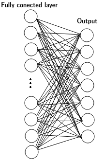
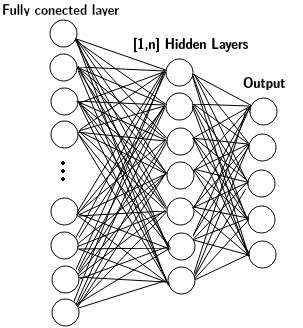

Neural Nets Architecture
We analyse two slightly different neural nets architectures: MLP and DMLP. The hyperparameters chosen for optization are shown for each archtecure below.
Both architectures share 7 out of 9 hyperparameters. The optization is done at each trial chossen a set of those parameters.
MLP
| Activation | Initialization | Optimizator | Learning Rate | Regularization | Learning Rate - Reg | Units |
|---|---|---|---|---|---|---|
| Relu Linear |
Random Uniform Random Norm |
Adam RMSprop SGD Adamgrad |
0.01 0.001 0.0001 |
L1 L2 L1L2 |
0.01 0.001 0.0001 0.00001 |
64 512 |
DMLP
| Activation | Initialization | Optimizator | Learning Rate | Regularization | Learning Rate - Reg | Units | Dropout | Layers |
|---|---|---|---|---|---|---|---|---|
| Relu Linear |
Random Uniform Random Norm |
Adam RMSprop SGD Adamgrad |
0.01 0.001 0.0001 |
L1 L2 L1L2 |
0.01 0.001 0.0001 0.00001 |
64 512 |
0 0.1 0.3 0.5 0.7 |
1 2 4 |